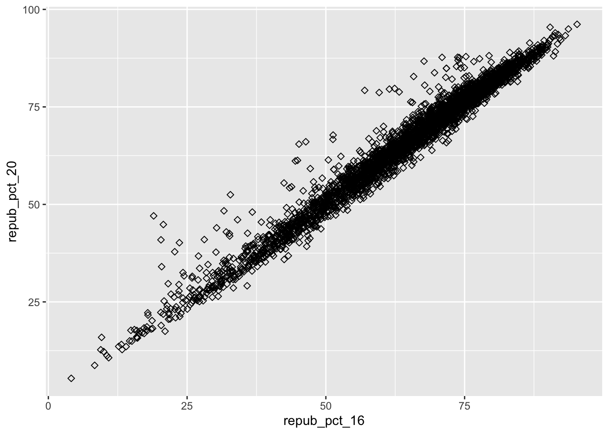
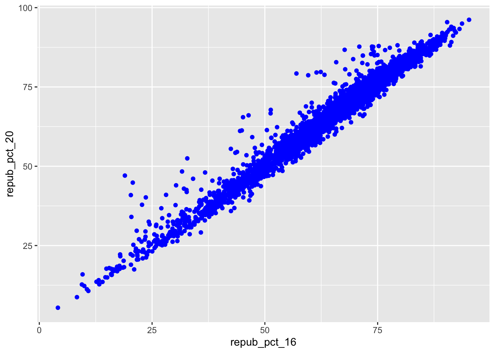
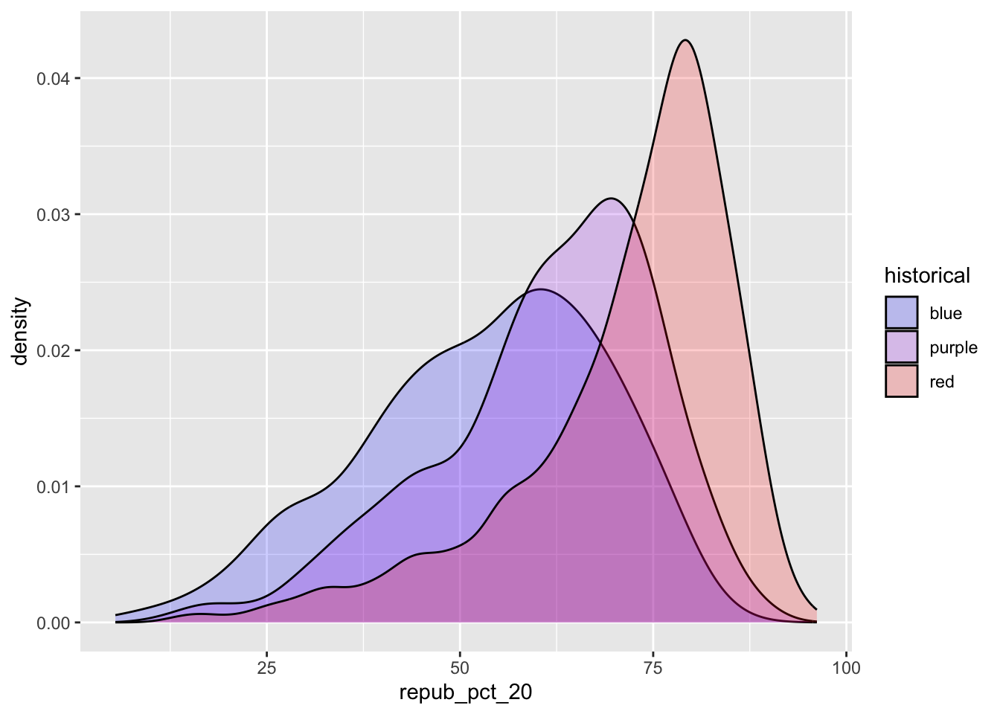

Use this file for practice with the bivariate viz in-class activity. Refer to the class website for details.
Code
# Load the packagelibrary(tidyverse)
── Attaching core tidyverse packages ──────────────────────── tidyverse 2.0.0 ──
✔ dplyr 1.1.4 ✔ readr 2.1.5
✔ forcats 1.0.0 ✔ stringr 1.5.1
✔ ggplot2 3.5.1 ✔ tibble 3.2.1
✔ lubridate 1.9.4 ✔ tidyr 1.3.1
✔ purrr 1.0.2
── Conflicts ────────────────────────────────────────── tidyverse_conflicts() ──
✖ dplyr::filter() masks stats::filter()
✖ dplyr::lag() masks stats::lag()
ℹ Use the conflicted package (<http://conflicted.r-lib.org/>) to force all conflicts to become errors
Code
# Import datasurvey <-read.csv("https://hash-mac.github.io/stat112site-s25/data/survey.csv")# How many students have now filled out the survey? 49dim(survey)
# Set up the plotting frame# How does this differ than the frame for our histogram of repub_pct_20 alone?ggplot(elections, aes(y = repub_pct_20, x = repub_pct_16))
Code
# Add a layer of points for each county# Take note of the geom!ggplot(elections, aes(y = repub_pct_20, x = repub_pct_16)) +geom_point()
Code
# Change the shape of the points# What happens if you change the shape to another number?- differnt shapesggplot(elections, aes(y = repub_pct_20, x = repub_pct_16)) +geom_point(shape =5)

Code
# YOU TRY: Modify the code to make the points "orange"# NOTE: Try to anticipate if "color" or "fill" will be useful here. Then try both.- fill did not work- color made points blueggplot(elections, aes(y = repub_pct_20, x = repub_pct_16)) +geom_point(color="blue")

Code
# Add a layer that represents each county by the state it's in# Take note of the geom and the info it needs to run!ggplot(elections, aes(y = repub_pct_20, x = repub_pct_16)) +geom_text(aes(label = state_abbr))
13 Exercise 4
Code
ggplot(elections, aes(y = repub_pct_20, x = repub_pct_16)) +geom_point() +geom_smooth()
`geom_smooth()` using method = 'gam' and formula = 'y ~ s(x, bs = "cs")'
Code
ggplot(elections, aes(y = repub_pct_20, x = repub_pct_16)) +geom_smooth()
`geom_smooth()` using method = 'gam' and formula = 'y ~ s(x, bs = "cs")'
Code
ggplot(elections, aes(y = repub_pct_20, x = repub_pct_16)) +geom_point() +geom_smooth(method ="lm")
`geom_smooth()` using formula = 'y ~ x'
14 Exercise 5
Code
# Scatterplot of repub_pct_20 vs median_rentggplot(elections, aes(y = repub_pct_20, x = median_rent)) +geom_point()
Code
# Scatterplot of repub_pct_20 vs median_ageggplot(elections, aes(y = repub_pct_20, x = median_age)) +geom_point()
15 Exercise 6
Code
ggplot(elections, aes(y = repub_pct_20, x = historical)) +geom_point()
# Name two "bad" things about this plot- the colrs are wrong, and is confusing to readggplot(elections, aes(x = repub_pct_20, fill = historical)) +geom_density()
Code
# What does scale_fill_manual do?- manuely picks the colorsggplot(elections, aes(x = repub_pct_20, fill = historical)) +geom_density() +scale_fill_manual(values =c("blue", "purple", "red"))
Code
# What does alpha = 0.5 do?- changes color opasity# Play around with different values of alpha, between 0 and 1ggplot(elections, aes(x = repub_pct_20, fill = historical)) +geom_density(alpha =0.2) +scale_fill_manual(values =c("blue", "purple", "red"))

Code
# What does facet_wrap do?!- seperates the graphsggplot(elections, aes(x = repub_pct_20, fill = historical)) +geom_density() +scale_fill_manual(values =c("blue", "purple", "red")) +facet_wrap(~ historical)
Code
# Let's try a similar grouping strategy with a histogram instead of density plot.# Why is this terrible?- It is hard to read and look at and dosent mach the oters or the dataggplot(elections, aes(x = repub_pct_20, fill = historical)) +geom_histogram(color ="white") +scale_fill_manual(values =c("blue", "purple", "red"))
`stat_bin()` using `bins = 30`. Pick better value with `binwidth`.
19 Exercise 11
Code
# Plot 1: adjust this to recreate the top plotggplot(elections, aes(x = historical)) +geom_bar()
Code
# Plot 2: adjust this to recreate the bottom plotggplot(elections, aes(x = winner_20)) +geom_bar()
20 Exercise 12
Code
# A stacked bar plot# How are the "historical" and "winner_20" variables mapped to the plot, i.e. what roles do they play?ggplot(elections, aes(x = historical, fill = winner_20)) +geom_bar()
Code
# A faceted bar plotggplot(elections, aes(x = winner_20)) +geom_bar() +facet_wrap(~ historical)
Code
# A side-by-side bar plot# Note the new argument to geom_barggplot(elections, aes(x = historical, fill = winner_20)) +geom_bar(position ="dodge")
Code
# A proportional bar plot# Note the new argument to geom_barggplot(elections, aes(x = historical, fill = winner_20)) +geom_bar(position ="fill")
ggplot(weather, aes(x = temp3pm, fill = location)) +geom_density(alpha =0.5)
Warning: Removed 19 rows containing non-finite outside the scale range
(`stat_density()`).
Source Code
---title: "Bivariate Viz"---Use this file for practice with the **bivariate viz** in-class activity. Refer to the class website for details.```{r}# Load the packagelibrary(tidyverse)``````{r}# Import datasurvey <-read.csv("https://hash-mac.github.io/stat112site-s25/data/survey.csv")# How many students have now filled out the survey? 49dim(survey)# What type of variables do we have? catagorical?``````{r}# Load dataelections <-read.csv("https://mac-stat.github.io/data/election_2020_county.csv")```# Exercise 2```{r}# Set up the plotting frame# How does this differ than the frame for our histogram of repub_pct_20 alone?ggplot(elections, aes(y = repub_pct_20, x = repub_pct_16))``````{r}# Add a layer of points for each county# Take note of the geom!ggplot(elections, aes(y = repub_pct_20, x = repub_pct_16)) +geom_point()``````{r}# Change the shape of the points# What happens if you change the shape to another number?- differnt shapesggplot(elections, aes(y = repub_pct_20, x = repub_pct_16)) +geom_point(shape =5)``````{r}# YOU TRY: Modify the code to make the points "orange"# NOTE: Try to anticipate if "color" or "fill" will be useful here. Then try both.- fill did not work- color made points blueggplot(elections, aes(y = repub_pct_20, x = repub_pct_16)) +geom_point(color="blue")``````{r}# Add a layer that represents each county by the state it's in# Take note of the geom and the info it needs to run!ggplot(elections, aes(y = repub_pct_20, x = repub_pct_16)) +geom_text(aes(label = state_abbr))```# Exercise 4```{r}ggplot(elections, aes(y = repub_pct_20, x = repub_pct_16)) +geom_point() +geom_smooth()``````{r}ggplot(elections, aes(y = repub_pct_20, x = repub_pct_16)) +geom_smooth()``````{r}ggplot(elections, aes(y = repub_pct_20, x = repub_pct_16)) +geom_point() +geom_smooth(method ="lm")```# Exercise 5```{r}# Scatterplot of repub_pct_20 vs median_rentggplot(elections, aes(y = repub_pct_20, x = median_rent)) +geom_point()# Scatterplot of repub_pct_20 vs median_ageggplot(elections, aes(y = repub_pct_20, x = median_age)) +geom_point()```# Exercise 6```{r}ggplot(elections, aes(y = repub_pct_20, x = historical)) +geom_point()```# Exercise 7```{r}# Side-by-side violin plotsggplot(elections, aes(y = repub_pct_20, x = historical)) +geom_violin()``````{r}# Side-by-side boxplots (defined below)ggplot(elections, aes(y = repub_pct_20, x = historical)) +geom_boxplot()```# Exercise 8```{r}ggplot(elections, aes(x = repub_pct_20)) +geom_density()```# Exercise 9```{r}# Name two "bad" things about this plot- the colrs are wrong, and is confusing to readggplot(elections, aes(x = repub_pct_20, fill = historical)) +geom_density()``````{r}# What does scale_fill_manual do?- manuely picks the colorsggplot(elections, aes(x = repub_pct_20, fill = historical)) +geom_density() +scale_fill_manual(values =c("blue", "purple", "red"))``````{r}# What does alpha = 0.5 do?- changes color opasity# Play around with different values of alpha, between 0 and 1ggplot(elections, aes(x = repub_pct_20, fill = historical)) +geom_density(alpha =0.2) +scale_fill_manual(values =c("blue", "purple", "red"))``````{r}# What does facet_wrap do?!- seperates the graphsggplot(elections, aes(x = repub_pct_20, fill = historical)) +geom_density() +scale_fill_manual(values =c("blue", "purple", "red")) +facet_wrap(~ historical)``````{r}# Let's try a similar grouping strategy with a histogram instead of density plot.# Why is this terrible?- It is hard to read and look at and dosent mach the oters or the dataggplot(elections, aes(x = repub_pct_20, fill = historical)) +geom_histogram(color ="white") +scale_fill_manual(values =c("blue", "purple", "red"))```# Exercise 11```{r}# Plot 1: adjust this to recreate the top plotggplot(elections, aes(x = historical)) +geom_bar()``````{r}# Plot 2: adjust this to recreate the bottom plotggplot(elections, aes(x = winner_20)) +geom_bar()```# Exercise 12```{r}# A stacked bar plot# How are the "historical" and "winner_20" variables mapped to the plot, i.e. what roles do they play?ggplot(elections, aes(x = historical, fill = winner_20)) +geom_bar()``````{r}# A faceted bar plotggplot(elections, aes(x = winner_20)) +geom_bar() +facet_wrap(~ historical)``````{r}# A side-by-side bar plot# Note the new argument to geom_barggplot(elections, aes(x = historical, fill = winner_20)) +geom_bar(position ="dodge")``````{r}# A proportional bar plot# Note the new argument to geom_barggplot(elections, aes(x = historical, fill = winner_20)) +geom_bar(position ="fill")```# Exercise 13```{r}weather <-read.csv("https://mac-stat.github.io/data/weather_3_locations.csv")``````{r}ggplot(weather, aes(x = temp3pm, fill = location)) +geom_density(alpha =0.5)```